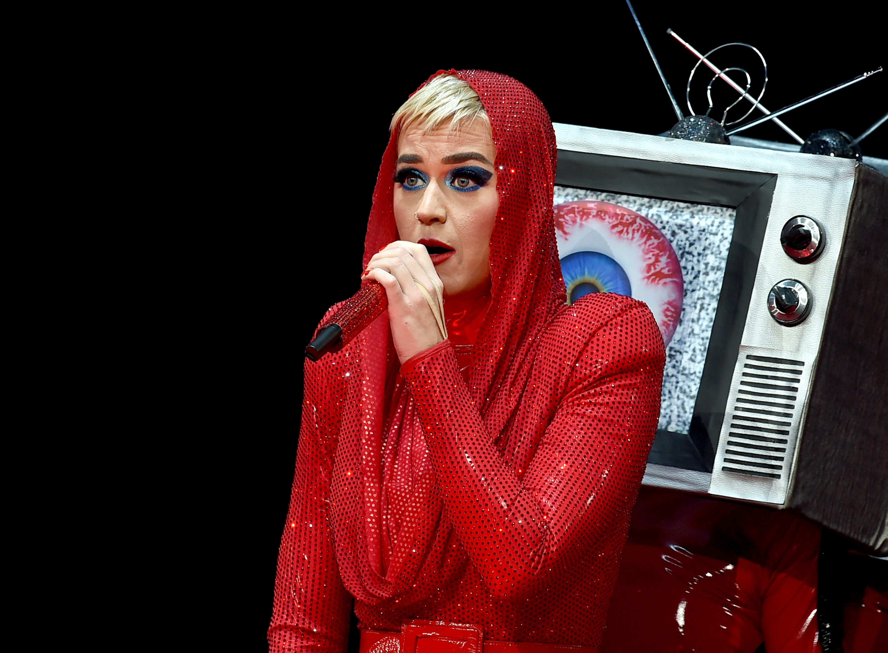

Log out
A Katy Perry le niegan la entrada a China y no podrá cantar en Victoria's Secret Fashion Show
El británico Harry Styles remplazará a la artista. El desfile de la firma de lencería que se realiza el próximo lunes está lleno de polémicas.
La organización del esperado desfile anual de la firma de lencería Victoria's Secret tuvo (otro) contratiempo de última hora, pues Katy Perry no podrá cantar en el espectáculo que se realizará el próximo lunes en Shanghi . (Leer El gesto de Gigi Hadid que tiene en problemas a Victoria's Secret en China).
Según el diario The New York Post, la cantante estadounidense no podrá cantar en el evento ya que no le dieron el visado para acceder al país, una negativa que podría estar íntimamente relacionada con el hecho de que, en 2015, la artista ofreció un concierto en la ciudad de Taipei -capital del disputado territorio de Taiwan- y para la ocasión lució un vestido en el que se apreciaba claramente la presencia de girasoles, la flor que simboliza las ansias de independencia de buena parte de la población.
Según fuentes del evento, a Katy Perry se le comunicó en un primer momento que no tendría problemas a la hora de hacerse con los correspondientes permisos, una postura que habría cambiado radicalmente en estos últimos días cuando los responsables del departamento de extranjería pudieron visionar algunos fragmentos del citado recital, durante el cual llegó a ondear la bandera taiwanesa que no es reconocida por el estado chino. (Galería Nuevo Fantasy Bra de Victoria's Secret cuesta 2 millones de dólares).

"Le llegó una notificación en la que se afirmaba claramente que recibiría el visado para poder actuar en el show de Victoria's Secret en Shangái, pero poco después el gobierno chino cambió de opinión y se la han cancelado. Cada vez que un artista solicita la entrada en el país para actuar, las autoridades revisan videos, publicaciones en las redes sociales y recortes de prensa para comprobar que no hayan hecho nada ofensivo para el país o que su espectáculo no contenga mensajes subversivos. Hace unos años, Maroon Five no pudo actuar porque poco antes uno de sus miembros le había deseado feliz cumpleaños al Dalai Lama [muy combativo en la causa independentista del Tíbet]", expresó un informante al mencionado periódico.
Por lo pronto, será el excantante de One Direction, Harry Styles, quien se encargue de cantar en el Victoria's Secret Fashion Show 2017.
No es el primer contratiempo que sufre el desfile de este año. Gigi Hadid canceló el viernes su participación debido al revuelo causado por la difusión de un video en el que imita los ojos rasgados de los chinos.
Además, la marca estadounidense de lencería femenina que no podrá contar con tres modelos rusas y una ucraniana a quienes China les negó un visado, según medios de prensa.